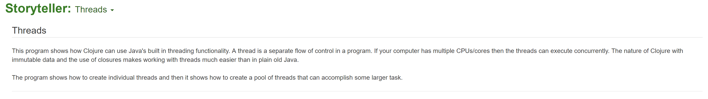
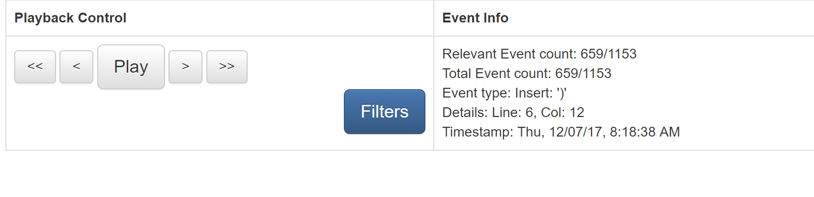
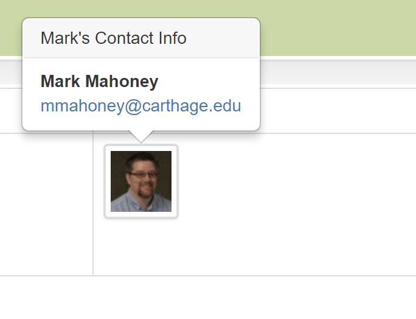
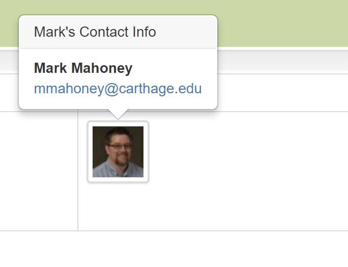

Storyteller: Docs
Follow along with this document by interacting with the example playback in your browser.
Title and Description

Every playback has a title and a description. This sets the context for the code that a viewer is about to see animated.
The author might provide some background on the problem that is being solved or give some hint about the techniques that will be shown in the playback.
Tip: The description can be hidden by clicking on the name of the playback at the top of the screen with a dropdown arrow next to it.
Playback Window

This is the playback window. It has a tab for each file to be animated, some controls, and other information. A playback shows the evolution of some code with some comments about how and why the code is changing over time. A developer can create a playback with a series of comments that tells the story of how their code evolved.
Playback Control

To get a playback to start or stop there is a button to toggle between Play and Pause.
Playback 'events' are animated one at a time. There are different kinds of playback events. There are events for the insertion
and deletion of individual text characters along with events to record file/directory operations (create, delete, move, rename).
There are buttons to move one event at a time (< for backward and > for forward) or to
move one comment at a time (<< to move to the previous comment and >> to move forward
to the next comment).
There are keyboard shortcuts to move through a playback as well. The space bar toggles between play and pause.
left arrow and right arrow move the playback one event at a time. shift + left arrow
and shift + right arrow move the playback to the next comments.
Filters limit what part of a development session gets played back. More information about filtering can be found here.
Tip: Although Storyteller is capable of animating the insertion and deletion of every single character in a programming session some viewers prefer to skip the animation and focus on the state of the code at comments points only. Often, this allows a viewer to get through the playback faster. These controls enable the flexibility to view the playback with animation or simply at the comment points.
Current Event Information
As the playback progresses events are handled in the playback window. The most current event has some information recorded about it. This information is described in the section labelled 'Event Info' in the user interface. It displays the event number, the event type, the location of the event, and a timestamp of when the event was recorded.
Developer Information
 

This part of the interface shows which developer was active when the event was recorded. Storyteller supports multiple developers programming together in groups. Each active developer will be shown here. More information about managing developers can be found here.
Storyteller uses the Gravatar service for developer images.
Tip: Mousing over the developer image shows more information about the developer.
Viewing Comments

The green playback progress bar shows roughly how many relevant events have been played and how many are left. The dark green vertical bars are points in the playback where comments have been added. By default, a playback will pause when an event with a comment is encountered.
Tip: The playback progress bar can also be used to jump to different points in the playback. Click anywhere in the bar and the viewer will be taken to that point.

One the left hand side of the screen is the comment area. When making a playback authors can pause it at any point and add a comment. When the playback is replayed the comment will show at the pause point.
When making the comment the author can choose to highlight some code and it will be associated with the comment. It shows up with a highlight
in the playback window and is used to direct a comment to a one or more portions of the code. The picture above shows a playback paused on a
comment. There is some highlighted code, (new Thread ... ), that the author is describing in the comment. More information about
making comments can be found here.
When moving from comment to comment new code will show up in blue. Previously displayed code will be changed to the color green. If there was some deleted text a red bar will show up where the delete occurred. This makes it easy to see what has changed since the last comment. In addition, for each file that has been updated since the last comment will get a marker * next to the name in the file tabs.
The author can create comments that include text, hand drawn pictures, screenshots, or video to help them describe what is happening in their code.
Tip: Clicking on an image or a video will make it larger.
A single pause point can include more than one comment. Multiple comments are stacked on top of each other and some may not be visible on the screen until the viewer scrolls down. To make it easier to notice that there are multiple comments there is a comment counter. Each time a viewer clicks on a comment a running sum of 'read' comments will be increased. The viewer can use this to help them know if they are ready to move on to the next comment.
State of the File System

As a playback progresses the viewer can see the state of the file system when each event was recorded. This is shown on the bottom left of the screen. Each time a file was added, removed, renamed, or moved in the author's programming session this view will be updated.
A viewer can download the code at any point during a playback and experiment with it in the same state it is in the playback window. More information about downloading code can be found here.
Storyteller is also a distributed version control system that supports simple branching and merging. More information about this feature can be found here.